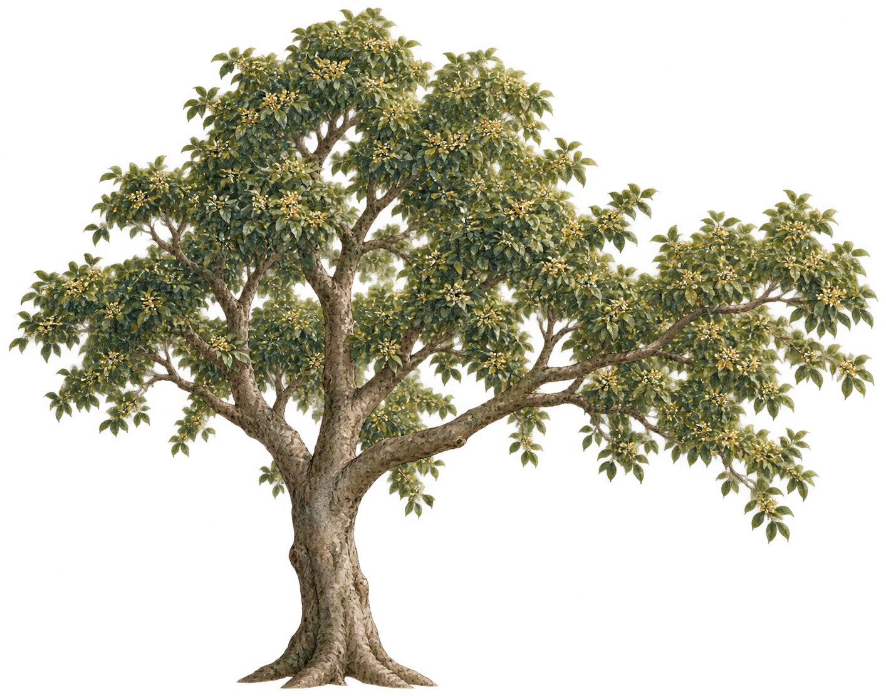
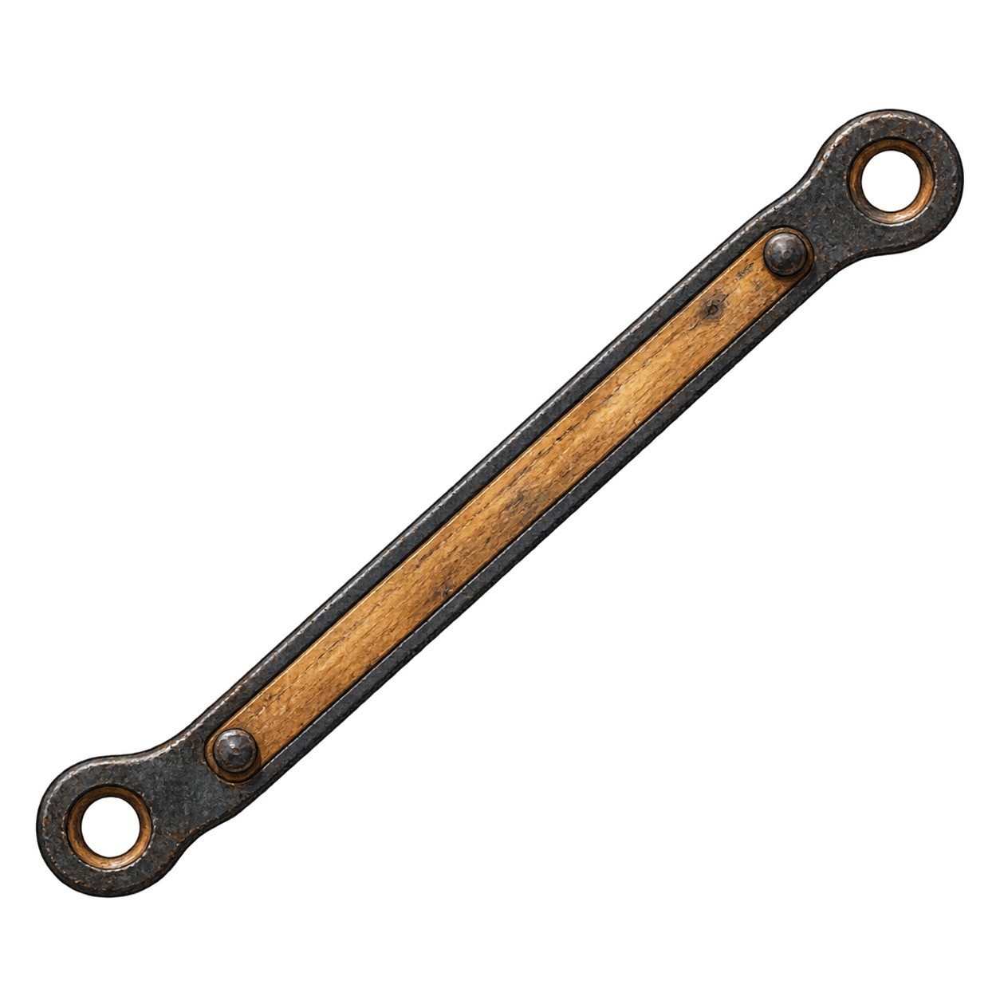
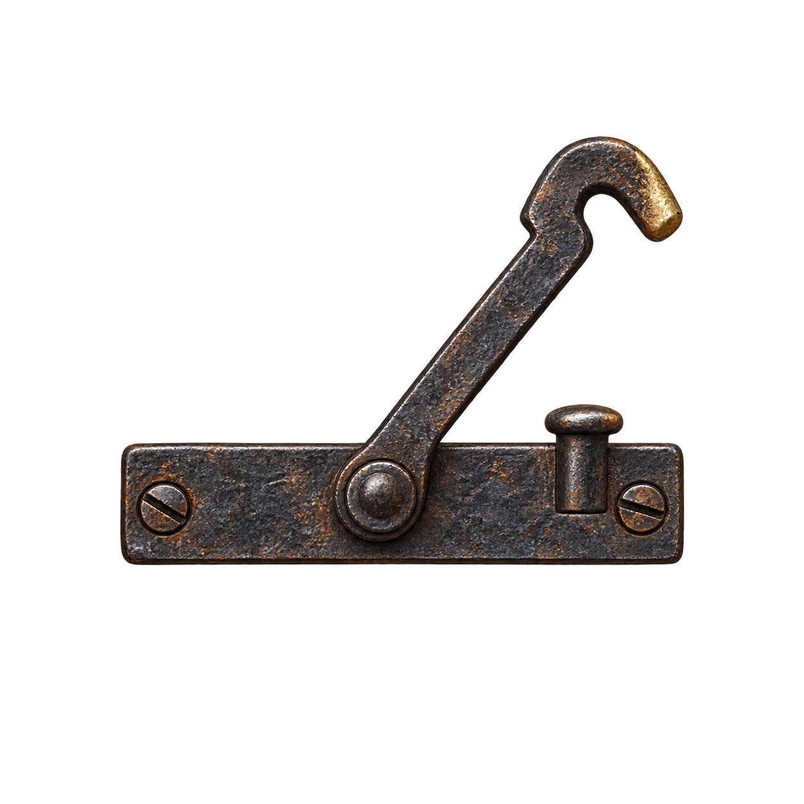
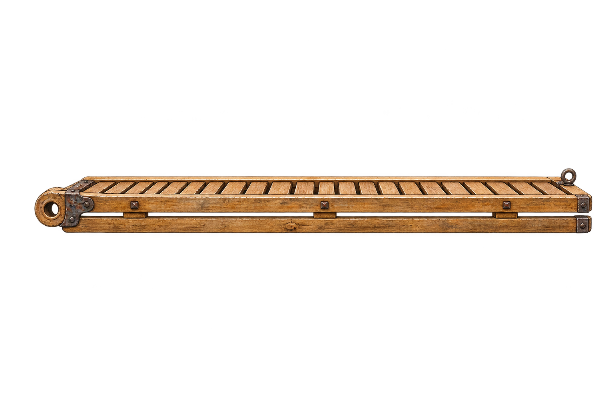

7 张透明机关分层、1 张自然桂花树候选、4 条机关音效。人物拉绳动画已按要求取消。
素材尚未接入游戏。自然树已改用向上分叉的真实树形，旧树碰撞不可直接复用。建议路线：晾晒架 → 主干分叉 → 短粗枝 → 固定窗台；具体位置、跳距需接入时实测。




顺序：拉绳 → 木架升起 → 锁扣扣住 → 现在态失败。48kHz 双声道 PCM24 WAV；为现有素材加工与本地声音设计。
尺寸、轴心与音频参数 · 生成提示词 · 接入说明